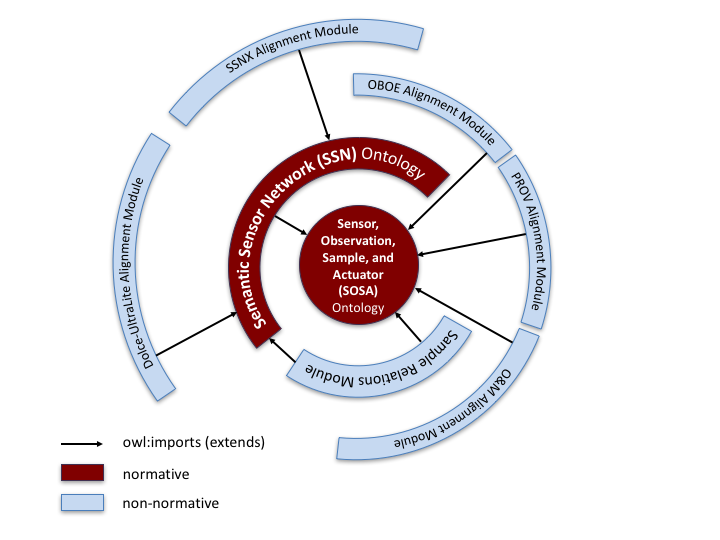

The Semantic Sensor Network Ontology (commonly known as "SSN" or sometimes "SSNO") is an OWL-2 DL ontology for describing sensors and the observations they make of the physical world. SSN is published in a modular architecture that supports the judicious use of "just enough" ontology for diverse applications, including satellite imagery, large scale scientific monitoring, industrial and household infrastructure, citizen observers, and Web of Things. SSN is described and examples of its use are given.
The namespace for SSN terms is https://www.w3.org/ns/ssn
The SSN ontology itself is available here.
This is the first published version of the SSN since its original publication by the SSN-XG, the Semantic Sensor Network Incubator Group of the W3C. This is a very incomplete draft to indicate the scope and style of changes proposed to be made to the original SSN. This document is both incomplete and inconsistent, but is being published at this stage to solicit comment from the community of SSN users and would-be users.
For OGC This is a Public Draft of a document prepared by the Spatial Data on the Web Working Group (SDWWG) — a joint W3C-OGC project (see charter). The document is prepared following W3C conventions. The document is released at this time to solicit public comment.
Sensor observations are a major source of data published on the Web. Yet, publishing, searching, reusing, and integrating this data requires more than just the observation values. Of equal importance is information about the studied feature of interest, such as a river, the observed property, such as flow velocity,and the sampling strategy. The sampling location, instrumentation, and information about the deployment of the instruments on a sensor platform may also be required for propoer interpretation. OGC's Sensor Web Enablement standards provide a means to annotate sensors and their observations. However, these standards are not yet integrated and aligned with paradigms such as Linked Data and W3C Semantic Web technologies more generally, that are believed to be a key driver for creating and maintaining a global and densely interconnected graph of data. The W3C Semantic Sensor Network Incubator Group (SSN) addressed these issues by developing an ontology that spans over multiple OGC standards and other specifications to support the semantic lifting of observations together with data about the sensors and their capabilities, deployment information, and so forth. Based on this initial work, the following document specifies a revised, modularized, and extended version of the SSN.
Justify why we are changing SSN at all
Specifically,SSN Alignment with DUL ontology.
This DUL alignment does not yet reflect the recent change to the namespace of DUL itself.
The movement of Sensor to become a direct subclass of dul:Object has been discussed but postponed by the Working Group
A thorough check on annotation properties is yet to be made.
One of the major issues practitioners raised with the Semantic Sensor Network Ontology as defined in the XG is its complexity, partly due to the layering underneath the DOLCE UltraLite Upperlevel ontology. This section explains the rationale and method for modularisation of the SSN.
Ontology modularisation is a common method investigated in ontology engineering to segment an ontology into smaller parts. In general, ontology modularization aims at providing users of ontologies with the knowledge they require, reducing the scope as much as possible to what is strictly necessary in a given use case. Two main categories of ontology modularization can be distinguished.
The first category comprises of approaches that focus on the composition of existing ontologies by means of integrating and mapping ontologies, most commonly through owl:import statements. OWL import has a direction from a source ontology to a target ontology, and although it is transitive, it only supports knowledge propagation in one direction, i.e. the importing ontology captures all the meaning of the imported terms used, i.e., it includes all axioms relevant to the meaning of these terms, however, the imported ontology may not capture any of the semantics of the importing ontology.
The second category comprises of mapping approaches that aim to partition and extract parts of ontologies as modules. These mapping approaches are not necessarily directional, but most approaches of ontology extraction rely on directionality of the imported modules. In fact in [Cuenca Grau et al 2009] it has been proven that in OWL DL, which is a syntactical variant of the Description Logic SHOIN, checking whether an ontology is in fact a module of an ontology given a vocabulary is an undecidable problem. However, the main feature of an ontology module under the second category is that it is self-contained, i.e., the module captures the meaning of the imported terms used by including all axioms relevant to the meaning of these terms. This means, that the result of certain reasoning tasks such as subsumption or query answering within a single module should be possible and result in the same answers without the need to access other modules of the ontology.
In order to ensure this property, a solution has to be found for concepts in the ontology module that inherit object properties from concepts that are not in the module. One solution proposed by [Cuenca Grau et al] is to include the bottom concept for all such missing concepts. Another solution is to change the domain and range of an object property. Our modularisation approach uses two different methods depending on the directionality of the segmentation.
Figure 1 gives an overview of the modules of the SSN ontology. The
layering of the rings represents two methods of segmentation we
distinguish, horizontal and vertical segmentation, as follows:
Vertical modules are build upon each other, i.e. they directionally
owl:import lower level modules. If a higher level module is used without
importing its lower levels it may lead to inconsistencies or at least it
will lead to different answers when reasoning over the module compared
to reasoning over its complete stack of vertical ontology modules.
However, lower level modules are independent of their higher level
modules and logically consistent. Note that higher level here is not to
be confused with upper level ontologies. Upper level ontologies are
general knowledge ontologies that can be directionally imported in many
domains, whereas our definition of higher level ontologies here refers
to an ontology that extends one or several ontology modules to capture a
larger part of a knowledge domain and/or combine knowledge domains.
Modules that are horizontally layered do not depend on each other, i.e. they do not rely on the import of another horizontal module to lead to the same answers when reasoning over the module itself as opposed to reasoning over an imported horizontal module. If a concept in a module is connected to a concept in another horizontally layered module through a directional property such as a subClassOf relation or any asymmetric property, the range concept of such a relation has to be included in the module using the URI of the concept as it is defined in the other module.
This presentation on modularisation is incomplete. For example, we may have that the SSN core is an RDFS-only vocabulary with modular extensions supporting both expanded terms and expanded expressiveness in the ontology language.
Some auto-generated documentation, such as from LODE, should go here showing SSN as we have it for our FPWD.
This section identifies work that is planned to be done in the next iteration of the document. Comment on these topics and their priority is invited.
Check and reconsider or redesign modularisation of SSN. See proposal in charter: noting the work to split the ontology into smaller sections to offer simplified access
Modularisation of SSN might work like some of the following suggestions under discussionHow do we replace those components of dul that seem to be core to ssn if dul is not being used?
What goes in SSN and what should be just a recommended profile/extract/extension? These could include e.g. WoT? Iot-lite? satelite sensors? samples? human sensors? Or do we just advise how to do this in general?
Given the distinction between records and events, ssn:Observation is not the same concept as om:Observation. This arises also in alignment with PROV-O
Align SSN with PROV-O
Two such alignments have already been published in the literature. One proposal functions mostly rather like the alignment to DUL as described above in form, but some rather useful SWRL is also used.Is it ok to use SWRL, too, for this? Or would it be better to make some bigger changes to SSN to align with PROV-O?
We have an outstanding issue-11: Is the provenance requirement in scope?
Align SSN with RDF datacube
This alignment is necessary, at least, for the common use case of sensored time-series. There are a few examples in the literature, but it is suggested that some structural change to core SSN is needed to make this work. This needs to be considered in the context of the DUL disentanglement above because the encoding of measured values is important here. Observed properties also need to be checked.SSN for IoT devices
This could be achieved by defining a small SSN module that is suitable for small devices; by adopting IoT-lite or some other IoT ontology with a well-defined relationship to SSN (ie a formalised alignment). There are suggestions to reduce memory by short uris and labels (and annotations?), too.In this context actuation is a clear need and should be considered.
The user should be able to understand the network resource cost of proposed instructions (for example, power required per measurement, current battery life, latency before instructions can be executed). These qualities could be interpreted by the scientist user directly, or by an automated agent aiming to optimise network efficiency through resource scheduling and optimisation algorithms.
Align SSN with the ontology developed for the coverage deliverable
We would like to show that the sensors that observe coverage (commonly satellite, but could be in-situ ground-based sensors) can be described using SSN while their observations can be described via the SDW coverage deliverable.Extend SSN to to cover requirements identified in our UCR
These should be done by optional extensions to SSN, in the style of the optional DUL alignment above, so as to minimally impact existing users and to avoid overcrowding of the core. The requirements are recorded in the UCR documentAlign SSN to to implement Best Practices as defined in our BP deliverable.
In particular, the modelling of time and space should concur. SSN should tighten its modelling of location. There are relevant UCR requirements for this.Extend SSN to to cover requirements identified in our wish List
See the Wish list on the Group's wiki Of those, what is not covered elsewhere in this document is reproduced briefly here. Refer to the wish list for more detail, rationale and possible implementations.Review annotation properties, including multilingual. Fix typos and spelling
.Extend SSN to cover these things https://www.w3.org/2015/spatial/wiki/Working_Use_Cases#Various_Sensor_Use_Cases_.28SSN.29 (Action-25)
This is a description of some proposed dovumentation, resources permitting.